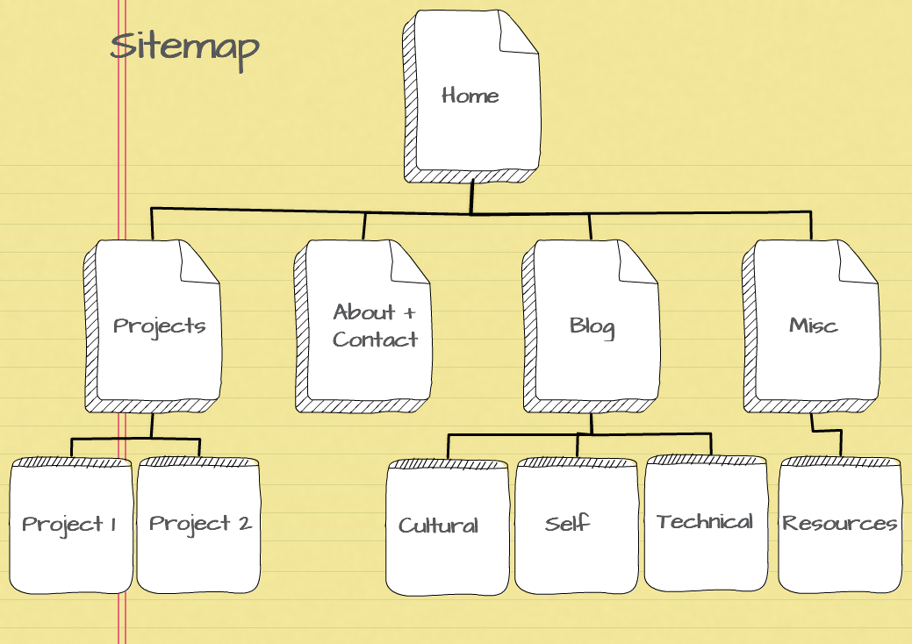
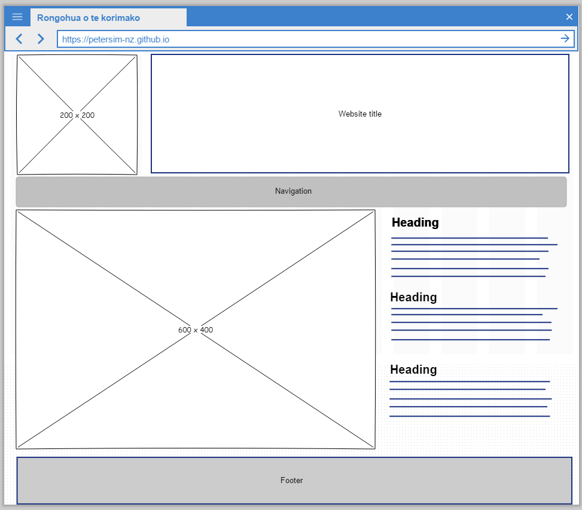
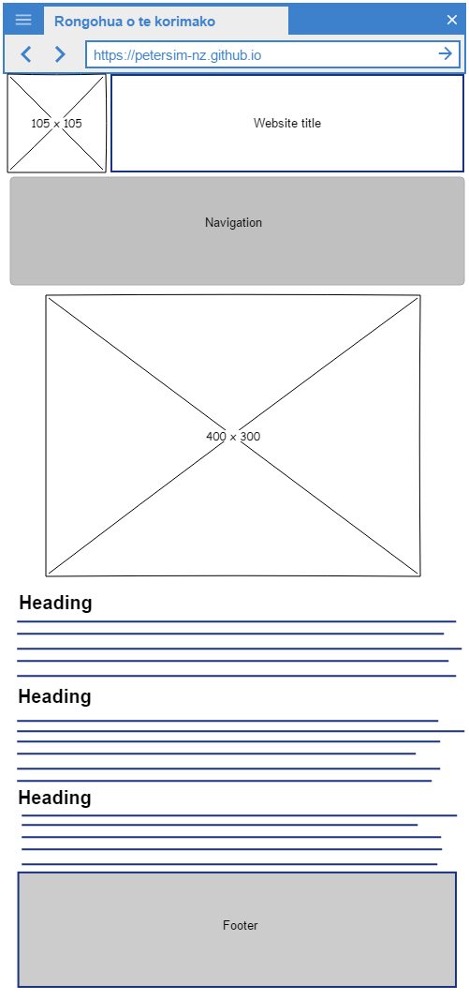
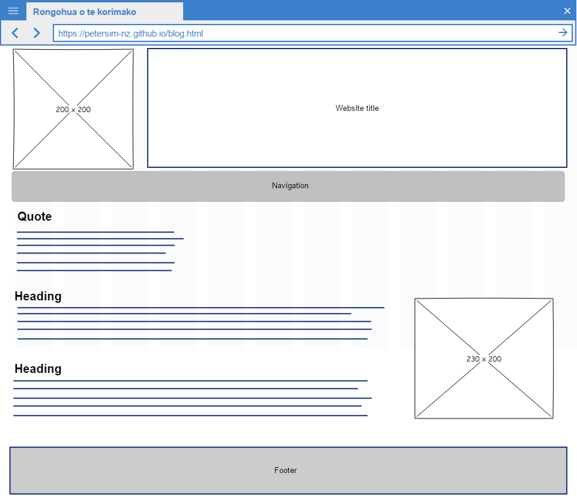
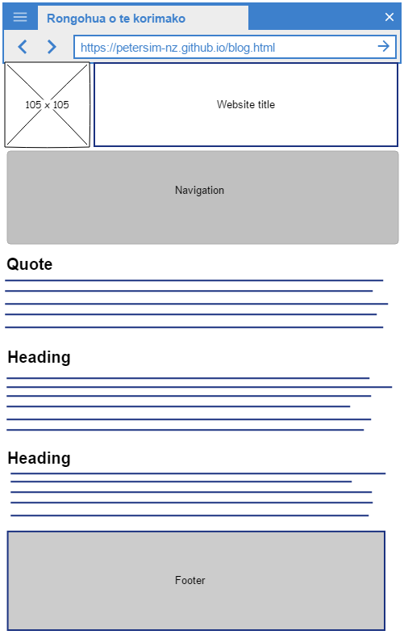

People interact with their phones very differently than they do with their PCs, and I think that when you design from the ground up with mobile in mind, you create a very different product than going the other way.
Kevin Systrom (1984–) American Businessman
Design to Web
What is your site’s primary purpose?
There are two purposes, but they are intertwined:
To help me learn the web design and development process.
To showcase my work and skills.
Who is your target audience?
Teachers at EDA
Fellow students at EDA
Friends and family
Future employers
How do you want site visitors to interact with your site? What experience would you like them to have?
Visitors will interact with the site by scrolling and using built-in navigation. This means it has to be as easy to use in mobile-view as for tablets or desktops. I'd like their experience to be one of enjoying the site and have the process of using the site be transparent (that is: everything is intuitive).
How will you build your site to support your desired user experience?
It needs to be responsive and look good. For me, things that are off-putting include spelling mistakes or an amateurish appearance. I know that EDA emphasises process over product. I will follow the development processes, but I will still try to ensure that the finished result is something that I'm proud of.

Aspects of Design
What is a responsive site? Why is responsiveness important?
Responsive websites adapt to the size of the screen (and therefore browser window) used to view them. Responsiveness is important because an increasing use of the Internet is via mobile devices which have smaller screens: these users have to be catered for. It is also important for the developer because only one website needs to be created, not multiple versions for different devices.
What is mobile-first design, and why is it important?
Responsiveness is really just a technical solution to scaling down wide webpages so they fit on narrower screens. In contrast, mobile-first design is a strategy where a website is produced for small screens and then scaled up for larger devices. By focusing on optimising mobile users' experiences, designers need to focus on important content which can be enhanced for Internet users with larger screens.
What are frameworks, and what are their pros and cons?
A front-end framework is prewritten HTML, CSS, and JavaScript files used develop websites. Often, frameworks (like Bootstrap or Skeleton) contain code to manage known problems like browser quirks. So frameworks save developers time and help ensure consistency. However, frameworks can be complex and may have steep learning curves. Also, websites built with frameworks may contain unused code, resulting in larger files which are slower to load.
What is a wireframe and why do we use it?
A website wireframe is a plan showing the structures of webpages. Wireframes attempt to show how content like text, images and navigation are to be arranged, without focusing on formatting or visual appearance. Wireframes allow clients and developers to visualise a site's structure and how it will function. They also speed up the development process as misunderstandings are minimised and stakeholders have an opportunity to critique designs before coding starts.
Wireframes—Home Page


Wireframes—Blog Page


What aspects of your wireframes were difficult to implement? Why?